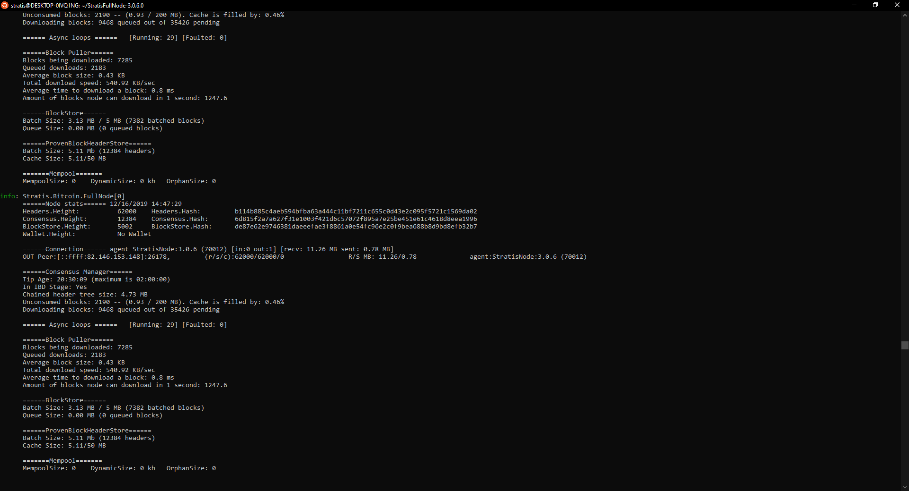

Running the Stratis Full Node¶
Pre-Requisites¶
Download and install .NET Core Runtime version 3.1 or newer:
https://dotnet.microsoft.com/download/dotnet-core
Download and unpack Stratis Full Node release:
Default port configuration¶
Following table summarizes port configuration used by the Stratis node
Port |
Network |
Description |
|---|---|---|
TCP/17105 |
Strax Mainnet |
P2P protocol |
TCP/17104 |
Strax Mainnet |
RPC server |
TCP/17103 |
Strax Mainnet |
API interface |
TCP/27105 |
Strax Testnet |
P2P protocol |
TCP/27104 |
Strax Testnet |
RPC server |
TCP/27103 |
Strax Testnet |
API interface |
TCP/37105 |
Strax Regtest |
P2P protocol |
TCP/37104 |
Strax Regtest |
RPC server |
TCP/37103 |
Strax Regtest |
API interface |
TCP/16179 |
Cirrus Mainnet |
P2P protocol |
TCP/16175 |
Cirrus Mainnet |
RPC server |
TCP/37223 |
Cirrus Mainnet |
API interface |
TCP/26179 |
Cirrus Testnet |
P2P protocol |
TCP/26175 |
Cirrus Testnet |
RPC server |
TCP/38223 |
Cirrus Testnet |
API interface |
TCP/26179 |
Cirrus Regtest |
P2P protocol |
TCP/26175 |
Cirrus Regtest |
RPC server |
TCP/38223 |
Cirrus Regtest |
API interface |
Configuring the Stratis Node¶
The Stratis Node can be configured through parameters passed to the executable or through configuration file.
Command-line only options
Option |
Default value |
Format |
Description |
|---|---|---|---|
-datadir |
%AppData%Roa mingStratisNode ~/.StratisNode |
Filesystem path in OS specific format |
Location of the node’s data folder |
-testnet |
0 |
0 – Disabled 1 – Enabled |
Start the node with Testnet network |
-regtest |
0 |
0 – Disabled 1 – Enabled |
Start the node with Regtest network |
Options which could be placed in stratis.conf configuration file or passed as parameters to the process
Option |
Default value |
Format |
Description |
|---|---|---|---|
port |
17105 |
1-65535 |
The default network port to connect to |
bind |
0.0.0.0:17105 |
ip:port |
Bind to given address. Use [host]:port notation for IPv6. Can be specified multiple times. |
connect |
ip:port |
Specified node to connect to. Can be specified multiple times. Using that option will disable ability to accept inbound connections |
|
addnode |
ip:port |
Add a node to connect to and attempt to keep the connection open. Can be specified multiple times. |
|
maxoutbo undconnections |
16 |
Numeric value |
The maximum number of outbound connections |
maxinbo undconnections |
109 |
Numeric value |
The maximum number of inbound connections |
agentprefix |
Text |
An optional prefix for the node’s user agent shared with peers. Truncated if over 10 characters. |
|
txindex |
Enable to maintain a full transaction index |
||
apiuri |
http://lo calhost:27103/ |
URL |
URI to node’s API interface powered by Swagger |
server |
0 |
0 – Disabled 1 – Enabled |
Activate RPC Server; pass 0 to disable or 1 to enable RPC server |
rpcbind |
127.0.0.1: 17104 |
ip:port |
Network address to which the RPC will bind to |
rpcallowip |
127.0.0.1/32 |
Network/subnet (I.e. 10.0.0.0/8) |
IP address allowed to connect to RPC |
There are many parameters that can be utilised when launching the Stratis Full Node, some of these parameters will differ dependent upon how the Stratis Full Node will be utilised.
A comprehensive list of available options can be found in the stratis.conf which is in the defined data directory upon first-launch of the Stratis Full Node.
Running the Stratis Node¶
Windows Example
Stratis.StraxD.exe -datadir=C:\StratisNode
Linux Example
Stratis.StraxD -datadir=/home/stratis/StratisNode
After executing the above command, the Stratis Full Node will start and begin peer discovery to obtain a copy of the StratisTest blockchain.
After a short period of time several peers will be discovered, this will be evidenced from the console window.
{kind=link}